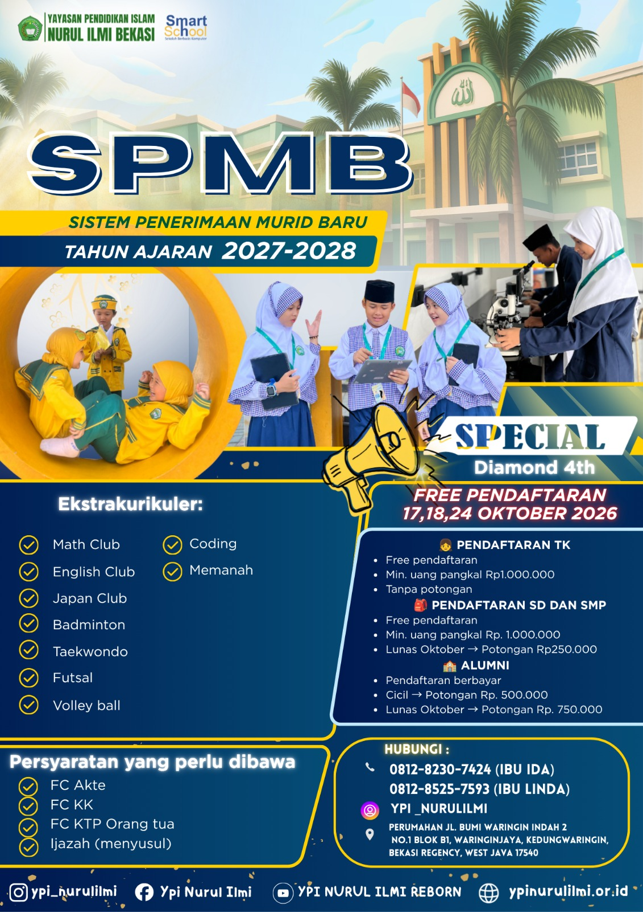

One Gate System
Sistem keamanan satu pintu dengan ID Card & Access Control.
TKIT, SDIT, dan SMPIT dalam satu yayasan pendidikan Islam yang terintegrasi.
Pembelajaran digital dengan sistem one gate card untuk seluruh peserta didik.
Program tahfidz intensif di sore hari oleh ustadz dan ustadzah berpengalaman.
Keamanan satu pintu dengan ID Card & Access Control untuk seluruh lingkungan sekolah.
Berdiri sejak 1 Agustus 2001, Yayasan Pendidikan Islam (YPI) Nurul Ilmi Bekasi merupakan lembaga pendidikan Islam yang terletak di Perumahan Bumi Waringin Indah 2, Waringinjaya, Kedungwaringin, Bekasi.
YPI Nurul Ilmi menyelenggarakan pendidikan Islam pada tiga jenjang: TKIT Nurul Ilmi (Taman Kanak-Kanak Islam Terpadu), SDIT Nurul Ilmi (Sekolah Dasar Islam Terpadu), dan SMPIT Nurul Ilmi (Sekolah Menengah Pertama Islam Terpadu).
Kami menawarkan pendidikan Islam yang berkualitas dengan pendekatan seimbang antara ilmu pengetahuan, teknologi, dan pembentukan karakter Islami.
Kami menawarkan pendidikan Islam yang berkualitas melalui berbagai program Unggulan dan fasilitas modern untuk mendukung perkembangan peserta didik.
Sistem keamanan satu pintu dengan ID Card & Access Control.
Pembelajaran digital dengan aplikasi dan perpustakaan digital.
Perpustakaan digital untuk mendukung pembelajaran mandiri.
Fasilitas belajar yang nyaman dan mendukung pembelajaran optimal.
Laboratorium Fisika, Kimia, dan Biologi untuk eksperimen.
Berbagai kegiatan ekstrakurikuler untuk mengembangkan potensi dan bakat.
Kenali pilihan pendidikan di bawah YPI Nurul Ilmi, mulai dari pendidikan anak usia dini, layanan daycare, hingga jenjang sekolah dasar dan menengah.
Taman Kanak-Kanak Islam Terpadu
TK Islam Terpadu di bawah YPI Nurul Ilmi Bekasi yang berdiri sejak 2013. Belajar melalui bermain dengan Kurikulum Merdeka dan nilai-nilai Islam.
Berdiri sejak 2013
Usia 4-6 tahun
Program Tahfidz & Adab
Layanan Penitipan Anak
Layanan pengasuhan anak usia 2-6 tahun untuk Ayah/Bunda yang bekerja. Aktivitas harian, stimulasi tumbuh kembang, dan laporan via WhatsApp.
07.00 - 17.00 WIB
Usia 2-6 tahun
Full/Half Day & Harian
Taman Kanak-Kanak Islam Terpadu
Membangun fondasi karakter dan kecintaan belajar sejak usia dini dengan pendekatan Islami dan menyenangkan.
Usia 4-6 tahun
Kurikulum PAUD Plus
Sekolah Dasar Islam Terpadu
Membangun karakter akademik dan akhlakul karimah dengan kurikulum nasionalplus dan pengembangan tahfidz yang berkelanjutan.
Usia 6-12 tahun
Kurikulum Merdeka
Sekolah Menengah Pertama Islam Terpadu
Mempersiapkan generasi Islam yang siap menghadapi tantangan dengan pengetahuan mendalam dan karakter kuat.
Usia 12-15 tahun
Kurikulum Merdeka
Wujudkan impian Anda untuk memiliki generasi Islam yang beriman, berilmu, dan berakhlak mulia. Temukan jenjang pendidikan yang sesuai untuk putra-putri Anda bersama YPI Nurul Ilmi.
Sosok di balik arah, nilai, dan pertumbuhan YPI Nurul Ilmi
Kepala Yayasan YPI Nurul Ilmi Bekasi
Dengan visi menciptakan generasi Islam yang beriman, berilmu, dan berakhlak mulia,beliau memimpin YPI Nurul Ilmi yang menaungi TKIT, SDIT, dan SMPIT Nurul Ilmi menuju pendidikan Islam yang berkualitas.
"Langkah kecil yang dimulai hari ini akan menjadi awal dari mimpi-mimpi besar di masa depan. Setiap proses, setiap perjuangan, dan setiap kenangan akan selalu menjadi bagian indah dalam perjalanan menuju kesuksesan."
Mewujudkan Generasi Beriman dan Berwawasan Ilmu Pengetahuan
Siswa-siswi YPI Nurul Ilmi terus mengembangkan potensi melalui berbagai prestasi akademik maupun non-akademik di berbagai kompetisi.
Kami bangga dengan pencapaian putra-putri YPI Nurul Ilmi di berbagai bidang
Total Prestasi
Hafiz Al-Quran
Juara Nasional
OSN, FLS2N, kompetisi sains dan olimpiade
Juara 1-3Hafalan Al-Quran hingga 30 juz
Program UnggulanTaekwondo, Futsal, Volly, Basket
Berbagai TingkatMTQ, Kaligrafi, Drumband
Prestasi UnggulanBerbagai program pendidikan yang mendukung pengembangan akademik, karakter, dan spiritual peserta didik di YPI Nurul Ilmi.
Waktu: Senin - Jumat, 07:00 - 14:00
Pembelajaran standar nasional yang diperkaya dengan pendidikan karakter Islami dan digitalisasi.
Waktu: Setiap hari, 14:00 - 15:00
Program pengajaran bahasa Inggris intensif untuk mempersiapkan siswa menghadapi era global.
Waktu: Sore hari, 15:00 - 17:00
Program hafalan Al-Quran intensif yang diasuh oleh ustadz dan ustadzah berpengalaman.
Waktu: Sore hari, 15:00 - 17:00
Berbagai kegiatan pilihan seperti Japan Club, Volly, Futsal, English Club, Math Club, Taekwondo, Tahfidz, Badminton, dan masih banyak lagi.
YPI Nurul Ilmi menyediakan fasilitas lengkap untuk mendukung pembelajaran dan perkembangan seluruh peserta didik.
Berbagai kegiatan ekstrakurikuler untuk mengembangkan potensi dan bakat siswa di setiap jenjang.
Berbagai kegiatan pendidikan dan perayaan sepanjang tahun ajaran:
Berdiri sejak tahun 2001, YPI Nurul Ilmi telah membuktikan kualitasnya dalam mencetak generasi Islam yang berkualitas di tiga jenjang pendidikan.
Berbagai kegiatan pendidikan dan perayaan sepanjang tahun ajaran di SDIT dan SMPIT Nurul Ilmi.
Informasi penting mengenai kegiatan belajar dan kebijakan sekolah di SDIT dan SMPIT Nurul Ilmi.
Mulai kelas 3, siswa diwajibkan menggunakan gadget/laptop milik pribadi.
Mulai kelas 5 dan 6, siswa sudah mengikuti KBM untuk Mata Pelajaran Coding.
Menggunakan Kurikulum Merdeka.
Pembelajaran berlangsung secara reguler.
Pintu gerbang utama ditutup pukul 06.45 untuk kegiatan pembiasaan pagi (KPP): Sholat Dhuha, murojaah atau senam ceria.
Siswa diwajibkan menggunakan gadget/laptop milik pribadi dari kelas 7.
Mulai kelas 7, 8, dan 9 siswa sudah mengikuti KBM untuk Mata Pelajaran Coding.
Menggunakan Kurikulum Merdeka.
Pembelajaran berlangsung secara reguler.
Pintu gerbang utama ditutup pukul 06.45 untuk kegiatan pembiasaan pagi (KPP): Sholat Dhuha, murojaah atau senam ceria.
Siswa SMP dilarang memakai sepeda motor saat berangkat ke sekolah.
Ketentuan umum yang berlaku untuk seluruh peserta didik SDIT dan SMPIT Nurul Ilmi.
Selain meraih prestasi akademik, dalam upaya membentuk karakter murid yang kuat dengan nilai-nilai Islami, pelanggaran yang dilakukan oleh siswa akan mendapat bimbingan, pendampingan hingga sanksi dari guru-guru yang terkait sebagai "Tim Revolusi Akhlak Sekolah". Hukuman berupa menulis/membaca atau menghafal surat pendek dalam Al-Qur'an.
Orangtua / Wali murid berhak mengikuti kegiatan yang diadakan oleh sekolah dalam rangka menjalin komunikasi dengan pihak sekolah, di antaranya pengajian rutin bulanan atau parenting yang dilakukan di Masjid maupun Auditorium / Ruang Serbaguna Nurul Ilmi.
Selama jam KBM baik Wali Kelas/Guru pendamping menggunakan mode "silent/senyap" sehingga tidak dapat menerima telepon atau membalas WA wali murid.
Lirik lagu Mars YPI Nurul Ilmi Bekasi
Kami semua siswa di yayasan nurul ilmi
Santun dan berbudi luhur
Belajar berlandaskan Al-Qur'an dan sunah Nabi Muhammad
Sehat kuat iman kita
Selalu menjaga akidah
Rajin belajar bukan sekadar
Pandai dunia semata
Menjadi siswa yang unggul
Berprestasi dan berakhlak
Jiwa berani sabar peduli
Menjunjung kalam ilahi
Marilah membangun bangsa
Tuk negeri kita tercinta
Pribadi cerdas insan pilihan
Untuk dunia akhirat
Balik lagi ke awal
Nurul Ilmi Berprestasi
YPI Nurul Ilmi Bekasi
Telah dibuka penerimaan murid baru Tahun Ajaran 2026/2027 untuk jenjang TK, SD, dan SMP di lingkungan YPI Nurul Ilmi Bekasi. Hubungi tim kami untuk mendapatkan informasi lengkap mengenai pendaftaran, persyaratan, dan informasi sekolah.
Pendaftaran Telah Dibuka
Poster Informasi SPMB YPI Nurul Ilmi Bekasi
Tim kami siap membantu Anda mendapatkan informasi pendaftaran SPMB Tahun Ajaran 2026/2027 untuk jenjang TK, SD, dan SMP.
Pilih kontak sesuai kebutuhan Anda atau hubungi tim kami melalui WhatsApp untuk mendapatkan informasi lebih lanjut.
Email Resmi Yayasan: yayasan@ypinurulilmi.or.id
Ada pertanyaan tentang pendaftaran atau program sekolah? Jangan ragu untuk menghubungi kami.
YPI Nurul Ilmi menyediakan pendidikan Islam berkualitas dengan biaya terjangkau untuk berbagai kalangan.
Tarif TA 2027-2028 beberapa unit masih dalam tahap konfirmasi. Silakan hubungi kami untuk informasi terbaru.
Catatan: Biaya pendaftaran Rp300.000 berlaku untuk semua jenjang. Biaya masuk dapat dibayarkan lunas atau bertahap sampai dengan April 2027.
Separated they live in. A small river named Duden flows by their place and supplies it with the necessary regelialia. It is a paradisematic country
Biaya bulanan untuk seluruh kebutuhan pendidikan dan kegiatan sekolah.
Biaya bulanan untuk seluruh kebutuhan pendidikan dan kegiatan sekolah.
Biaya bulanan untuk seluruh kebutuhan pendidikan dan kegiatan sekolah.